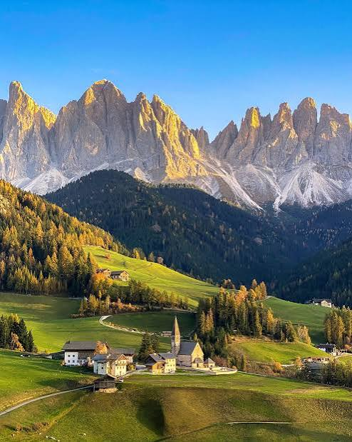

Environmental Advisory
Environmental advisory gives people and businesses the expert advice they need to take care of nature. It helps protect the planet by teaching organizations how to stop pollution, save clean water, and cut down on waste. By turning complicated science into simple, everyday steps, it guides teams to make smart choices that keep wildlife safe and protect our air and land for the future.Taking care of our environment starts with small everyday habits. This advisory portal offers simple guides and actionable steps to reduce your ecological footprint, protect natural water resources, and cultivate lush greenery in your local neighborhood. Explore our dedicated sections to learn how you can contribute to a healthier planet today.
Get Involved Community Wide
Joining forces with neighbors makes a big difference because small green habits multiply quickly. By getting involved in local groups, you can volunteer for neighborhood beach or park cleanups, plant native trees to clear the air, or help start community gardens and item-swapping hubs. Working with others also creates a strong, shared voice to ask local leaders and businesses for real climate action. When we share tools, trade tips on reducing waste, and look after our local green spaces together, we turn simple daily choices into a powerful movement that protects the Earth for everyone.